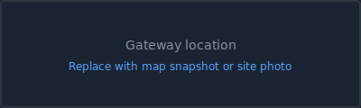

Learn more (RSSI, SNR, gateway)
RSSI = received signal strength (dBm); closer to 0 is stronger. SNR = signal-to-noise ratio; higher is better. Gateways are radio sites that receive device uplinks; location here is where the gateway received the packet, not the device position. LoRa Alliance
Dashboard
Loading...
Sites
Device types
Recent insights (anomalies)
Sites on map
Device
Loading...
Time open vs closed
Door state over time
Device health
All devices: last seen, battery, RSSI, SNR. Click a column header to sort. Scroll horizontally on small screens.
Loading...
| Device | Type | Last seen | Battery | RSSI | SNR | Margin | Power |
|---|
Gateway map
Click a gateway pin to open Site view. Weak links: devices with low signal (RSSI < -100).
Site (by gateway)

Door and climate
Door open/close (step) + temperature and humidity at this gateway.